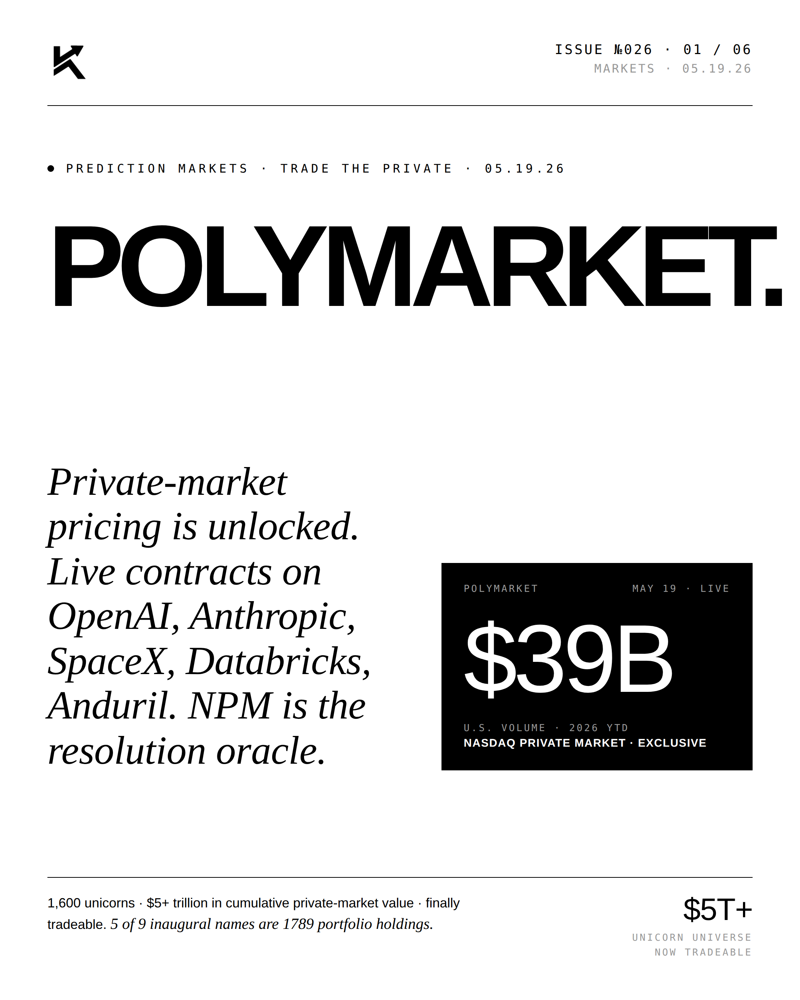
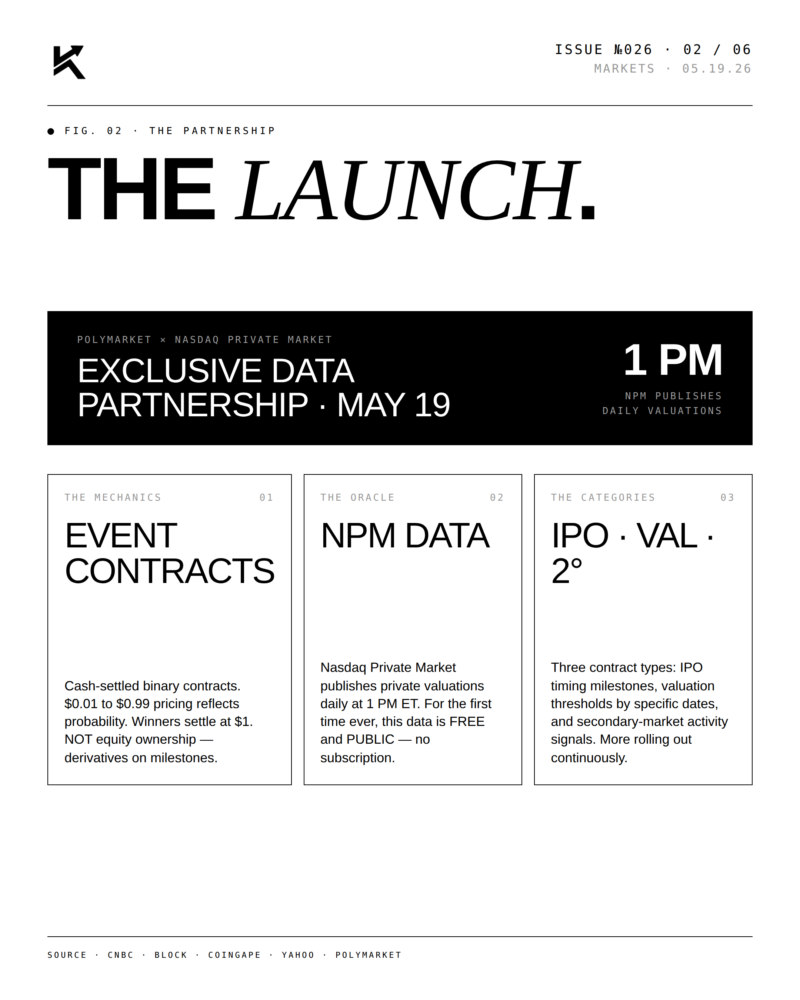
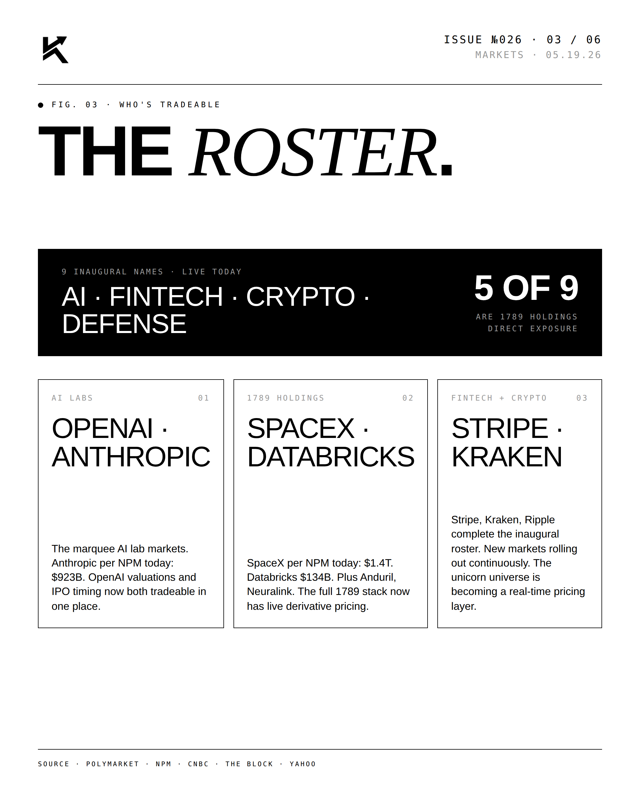
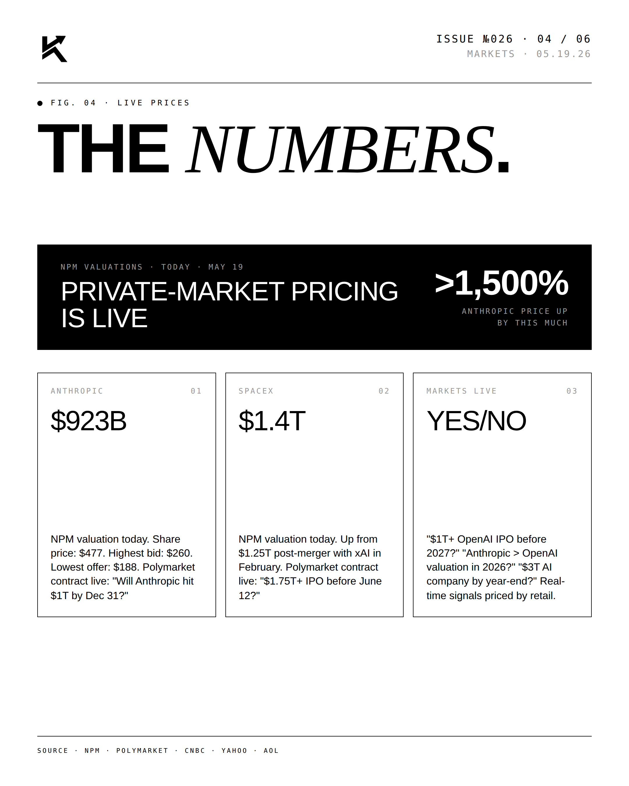
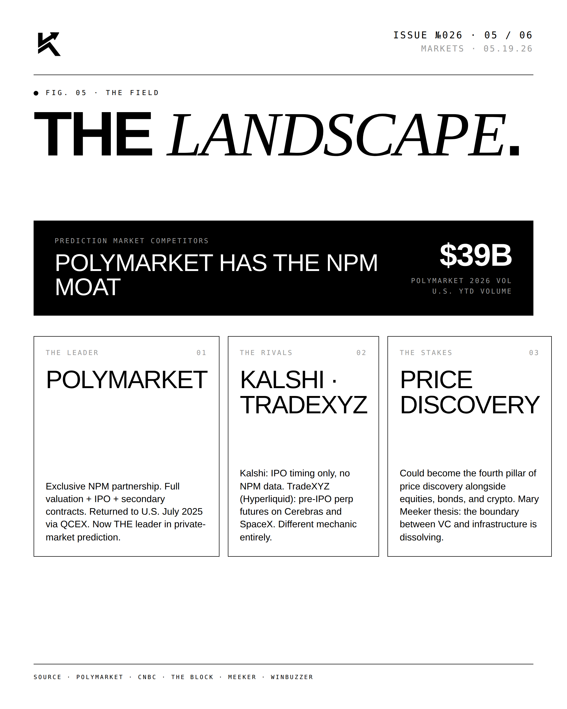
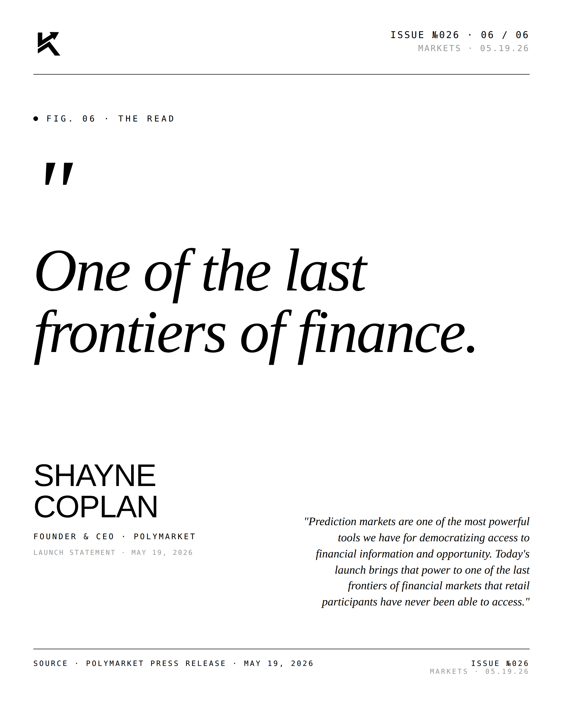

Polymarket.
Private-market pricing is unlocked. Polymarket launched live contracts on OpenAI, Anthropic, SpaceX, Databricks, and Anduril — with NASDAQ Private Market as the resolution oracle. $39B U.S. volume YTD.

The Lead.
Roughly 1,600 unicorns and $5T+ in cumulative private-market value just became tradeable. NASDAQ Private Market serves as the resolution oracle for the inaugural contracts; five of the nine launch names are 1789 portfolio holdings. The launch extends prediction markets into what Polymarket frames as one of the last closed corners of finance.




"One of the last
frontiers of finance."SHAYNE COPLANFounder & CEO · Polymarket · 05.19.26
"Prediction markets are one of the most powerful tools we have for democratizing access to financial information and opportunity. Today's launch brings that power to one of the last frontiers of financial markets that retail participants have never been able to access." — Shayne Coplan, Polymarket.

Disclosure
The author is a Limited Partner in 1789 Capital, which holds positions in Polymarket, SpaceX, Databricks, and Anduril — several of the names referenced in this post. Personal commentary and editorial analysis. Not investment advice, not an offer or solicitation.